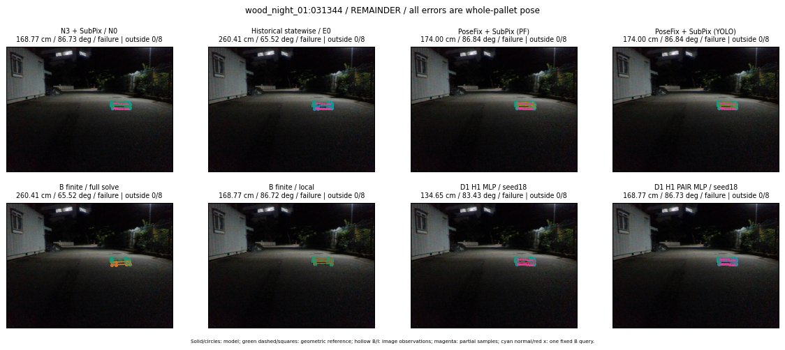

Whole-pallet pose errors; reference is a fixed geometric annotation, not certified physical GT.

Scores are uncalibrated logits. N0 retention is a numerical pose alias; it differs from H0 none or B fallback. B/I and profiles in baseline/B panels are original observations; L panels use new D1 observations. Only one deterministic supported B query is shown in a thumbnail; full support counts are below. Grey privacy rectangles edit the display copy only and are unrelated to O states; all observations were measured on original pixels. Thumbnails use JPEG quality85; detailed scientific panels are PNG.
| Method | Whole pose / cm, deg | Actual source | Selected ID | Score | Archived candidates | Eligible | N0 retained | H0 none | Fallback | Finite profiles |
|---|---|---|---|---|---|---|---|---|---|---|
| Raw YOLO + F | 153.75 cm / 85.43 deg / failure | OTHER | None | N/A | N/A | N/A | False | N/A | None | N/A |
| N3 + SubPix / N0 | 168.77 cm / 86.73 deg / failure | N0 | None | N/A | N/A | N/A | True | N/A | None | N/A |
| Historical statewise / E0 | 260.41 cm / 65.52 deg / failure | E0_REGENERATED | None | N/A | N/A | N/A | False | N/A | False | N/A |
| PoseFix raw | 157.85 cm / 86.58 deg / failure | OTHER | None | N/A | N/A | N/A | False | N/A | None | N/A |
| PoseFix + SubPix (PF) | 174.00 cm / 86.84 deg / failure | OTHER | None | N/A | N/A | N/A | False | N/A | False | historical support records 9; finite audit N/A |
| PoseFix + SubPix (YOLO) | 174.00 cm / 86.84 deg / failure | OTHER | None | N/A | N/A | N/A | False | N/A | False | historical support records 9; finite audit N/A |
| Historical L, seed18 | 168.77 cm / 86.73 deg / failure | N0 | N0 | N/A | 70 | 70 | True | True | True | N/A |
| Historical B fixed bank | 260.41 cm / 65.52 deg / failure | E0_REGENERATED | G13/SWAPPED_WD/sample/0 | N/A | N/A | N/A | False | N/A | False | N/A |
| Historical B full | 260.41 cm / 65.52 deg / failure | E0_REGENERATED | G13/SWAPPED_WD/sample/0 | N/A | N/A | N/A | False | N/A | False | N/A |
| Historical edge full | 260.41 cm / 65.52 deg / failure | E0_REGENERATED | G13/SWAPPED_WD/sample/0 | N/A | N/A | N/A | False | N/A | False | N/A |
| Historical AB full | 260.41 cm / 65.52 deg / failure | OTHER | NEW/AB/SWAPPED_WD/h0/G13/SWAPPED_WD/sample/0/PROPOSED_NATIVE_YAW_0 | N/A | N/A | N/A | False | N/A | False | N/A |
| B finite / fixed bank | 260.41 cm / 65.52 deg / failure | E0_REGENERATED | G13/SWAPPED_WD/sample/0 | N/A | N/A | N/A | False | N/A | False | 0/0 |
| B finite / full solve | 260.41 cm / 65.52 deg / failure | E0_REGENERATED | G13/SWAPPED_WD/sample/0 | N/A | N/A | N/A | False | N/A | False | 0/0 |
| B finite / local | 168.77 cm / 86.72 deg / failure | OTHER | NEW_FINITE/B/ORIGINAL_WD/h0/N0_LOCAL_SAME_PHYSICAL_POSE/ORIGINAL_WD | N/A | N/A | N/A | False | N/A | False | 0/0 |
| Edge finite / full solve | 260.41 cm / 65.52 deg / failure | E0_REGENERATED | G13/SWAPPED_WD/sample/0 | N/A | N/A | N/A | False | N/A | False | 0/0 |
| D0 H0 MLP / seed18 | 168.77 cm / 86.73 deg / failure | N0 | N0 | 2.464294672012329 | 54 | 54 | True | True | True | N/A |
| D0 H0 MLP / seed19 | 168.77 cm / 86.73 deg / failure | N0 | N0 | 3.4461617469787598 | 54 | 54 | True | True | True | N/A |
| D0 H0 MLP / seed20 | 168.77 cm / 86.73 deg / failure | N0 | N0 | -1.044919490814209 | 54 | 54 | True | True | True | N/A |
| D0 H1 MLP / seed18 | 134.65 cm / 83.43 deg / failure | OTHER | WD0/ORIGINAL_WD/sample/1 | -5.393588066101074 | 54 | 54 | False | False | False | N/A |
| D0 H1 MLP / seed19 | 134.65 cm / 83.43 deg / failure | OTHER | WD0/ORIGINAL_WD/sample/1 | -4.559600353240967 | 54 | 54 | False | False | False | N/A |
| D0 H1 MLP / seed20 | 134.65 cm / 83.43 deg / failure | OTHER | WD0/ORIGINAL_WD/sample/1 | -6.6583051681518555 | 54 | 54 | False | False | False | N/A |
| D1 H0 MLP / seed18 | 168.77 cm / 86.73 deg / failure | N0 | N0 | 5.465916156768799 | 54 | 54 | True | True | True | N/A |
| D1 H0 MLP / seed19 | 168.77 cm / 86.73 deg / failure | N0 | N0 | 7.311265468597412 | 54 | 54 | True | True | True | N/A |
| D1 H0 MLP / seed20 | 168.77 cm / 86.73 deg / failure | N0 | N0 | 6.124264717102051 | 54 | 54 | True | True | True | N/A |
| D1 H1 MLP / seed18 | 134.65 cm / 83.43 deg / failure | OTHER | WD0/ORIGINAL_WD/sample/1 | -4.646115303039551 | 54 | 54 | False | False | False | N/A |
| D1 H1 MLP / seed19 | 134.65 cm / 83.43 deg / failure | OTHER | WD0/ORIGINAL_WD/sample/1 | -4.280209541320801 | 54 | 54 | False | False | False | N/A |
| D1 H1 MLP / seed20 | 134.65 cm / 83.43 deg / failure | OTHER | WD0/ORIGINAL_WD/sample/1 | -5.110411643981934 | 54 | 54 | False | False | False | N/A |
| D1 H1 ROLE AFFINE / seed18 | 168.77 cm / 86.73 deg / failure | N0 | N0 | -1.6366307735443115 | 54 | 54 | True | False | False | N/A |
| D1 H1 ROLE AFFINE / seed19 | 168.77 cm / 86.73 deg / failure | N0 | N0 | -1.4557520151138306 | 54 | 54 | True | False | False | N/A |
| D1 H1 ROLE AFFINE / seed20 | 168.77 cm / 86.73 deg / failure | N0 | N0 | -1.5661576986312866 | 54 | 54 | True | False | False | N/A |
| D1 H1 PAIR MLP / seed18 | 168.77 cm / 86.73 deg / failure | N0 | N0 | -3.540184259414673 | 54 | 2 | True | False | False | N/A |
| D1 H1 PAIR MLP / seed19 | 168.77 cm / 86.73 deg / failure | N0 | N0 | -3.0663135051727295 | 54 | 2 | True | False | False | N/A |
| D1 H1 PAIR MLP / seed20 | 168.77 cm / 86.73 deg / failure | N0 | N0 | -4.447543621063232 | 54 | 2 | True | False | False | N/A |
| D1 H1 PAIR ROLE AFFINE / seed18 | 168.77 cm / 86.73 deg / failure | N0 | N0 | -1.9565743207931519 | 54 | 2 | True | False | False | N/A |
| D1 H1 PAIR ROLE AFFINE / seed19 | 168.77 cm / 86.73 deg / failure | N0 | N0 | -2.3312318325042725 | 54 | 2 | True | False | False | N/A |
| D1 H1 PAIR ROLE AFFINE / seed20 | 168.77 cm / 86.73 deg / failure | N0 | N0 | -2.08252215385437 | 54 | 2 | True | False | False | N/A |
| Regenerated common E0 | 260.41 cm / 65.52 deg / failure | E0_REGENERATED | E0_REGENERATED | N/A | N/A | N/A | False | N/A | False | N/A |